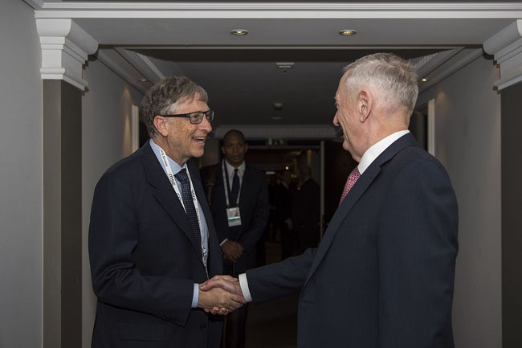

About me

I was born on October 28, 1955 and I am an American business magnate, software developer, investor, author, and philanthropist. I am a co-founder of Microsoft Corporation. During my career at Microsoft, I held the positions of chairman, chief executive officer (CEO), president and chief software architect, while also being the largest individual shareholder until May 2014. I am one of the best-known entrepreneurs and pioneers of the microcomputer revolution of the 1970s and 1980s.